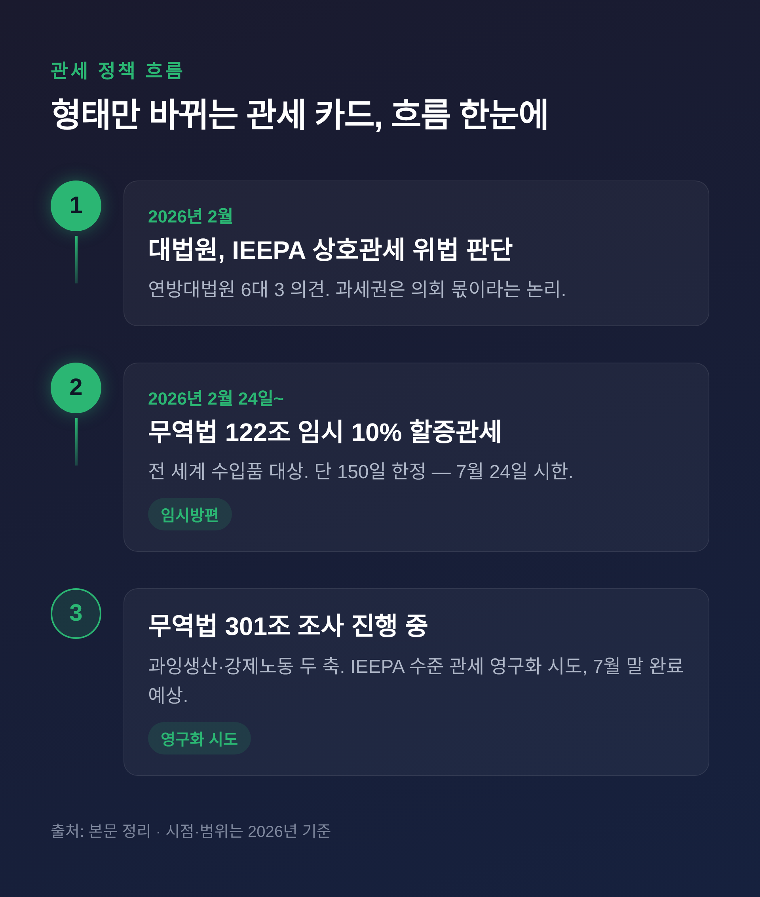
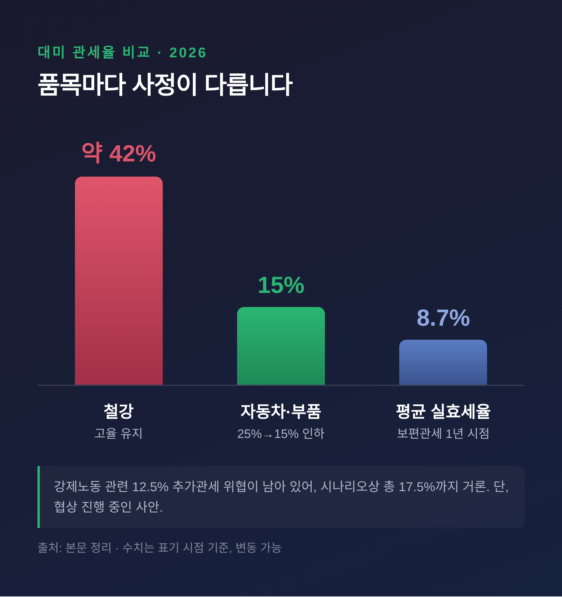
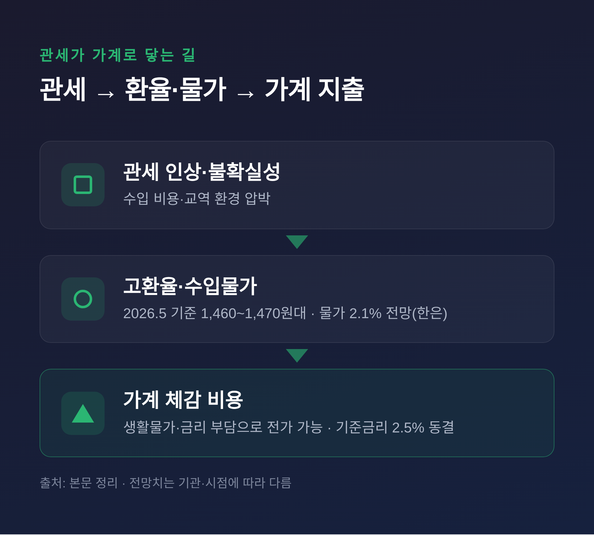

트럼프 관세 2.0과 2026 한국 경제, 내 가계의 대응법
트럼프 관세 정책이 2026년 들어 새 국면에 들어섰습니다.
이 글에서는 지금 한국에 적용되는 관세율, 수출이 받는 영향, 그리고 우리 가계가 무엇을 챙겨야 하는지를 차근히 정리해 보겠습니다.
먼저 핵심부터 짧게 말씀드립니다.
한국 자동차 관세는 15%로 내려왔지만, 강제노동 관련 12.5% 추가관세 위협이 남아 있습니다.
2026년 성장률 전망은 기관마다 1.8%에서 2.5%까지 엇갈립니다.
환율은 1,460원대 고점 부근에 머물러 있습니다.
결론은 단순합니다. 단기 예측에 베팅하기보다, 원칙을 정해 두는 편이 안전합니다.

대법원 판결 이후, 관세는 어디로 가고 있나
2026년 2월, 미 연방대법원이 중요한 결정을 내렸습니다.
6대 3 의견으로, 국제비상경제권한법(IEEPA)에 근거한 트럼프 행정부의 상호관세 부과가 위법이라고 판단했습니다.
비상사태 시 수입을 "규제할" 권한은 있어도, 관세를 부과할 과세권은 의회의 몫이라는 논리였습니다.
그런데 관세가 사라진 것은 아닙니다.
트럼프 행정부는 곧바로 우회로를 찾았습니다.
무역법 122조를 근거로 2026년 2월 24일부터 전 세계 수입품에 10% 임시 할증관세를 매겼습니다.
다만 이 122조 관세는 150일까지만 유효합니다. 7월 24일이면 시한이 끝납니다.
시한이 다가오자, 이번에는 무역법 301조 조사가 진행 중입니다.
과잉생산능력과 강제노동, 두 축으로 조사해 IEEPA 수준의 관세를 영구적으로 되살리려는 시도입니다.
7월 말 조사 완료가 예상됩니다.
임시방편에서 영구화로 — 관세 카드의 형태만 바뀌고 있는 셈입니다.

지금 한국에 매겨지는 관세율은
품목마다 사정이 다릅니다.
숫자로 정리하면 한눈에 들어옵니다.
| 품목 | 관세율 | 비고 |
|---|---|---|
| 자동차·부품 | 15% | 25%에서 인하, 2025년 11월 1일 소급 적용 |
| 철강 | 약 42% | 고율 관세 그대로 유지 |
| 반도체·에너지 | 대부분 미부과 | 단, "100% 관세" 발언으로 불확실성 상존 |
| 대미 평균 실효세율 | 8.7% | 보편관세 1년 시점 기준 |
자동차는 일본·EU와 같은 15% 수준을 지켜냈습니다.
반면 철강은 여전히 42% 수준의 무거운 관세를 안고 있습니다.
여기에 변수가 하나 더 있습니다.
USTR이 강제노동 제품 통제가 미흡한 국가에 추가관세를 예고했고, 한국은 45개국과 함께 12.5% 그룹에 포함됐습니다.
과잉생산 관련 5%까지 더해지면 총 17.5%까지 오를 수 있다는 시나리오도 거론됩니다.
다만 이는 아직 협상이 진행 중인 사안입니다.
청와대는 "한미 관세 합의 균형을 지키겠다"며 15% 방어에 힘을 싣고 있습니다.

수출 현장은 어떤가
영향이 가장 또렷하게 드러난 곳은 자동차부품입니다.
2025년 대미 자동차부품 수출액은 76억 6,600만 달러로, 전년보다 6.7% 줄었습니다.
코로나19 시기였던 2020년 이후 첫 감소세입니다.
2026년 방향은 전망이 갈립니다.
한국자동차산업협동조합은 15% 관세 확정과 고환율 환경을 들어 수출이 증가로 돌아설 것으로 봅니다.
반면 산업연구원(KIET)은 전기차 수요 둔화가 이어질 수 있다고 짚습니다.
한쪽은 회복, 한쪽은 둔화 — 같은 현장을 두고 견해가 나뉩니다.
반도체는 결이 다릅니다.
미국 비중이 크지 않아 관세 직접 영향은 제한적이라는 평가입니다.
AI 수요 기대가 2026년 수출의 하방 압력을 받쳐 줄 핵심 변수로 꼽힙니다.
다만 트럼프의 "반도체 100% 관세" 발언과 대중 수출통제는 여전히 리스크로 남습니다.
석유화학·일반기계·섬유는 대미 수출 감소가 예상되는 분야입니다.
2차전지는 대중 수출이 늘고 있습니다.
환율·물가·금리, 가계 체감은
거시 지표도 함께 봐야 가계 영향이 보입니다.
성장률 전망은 기관별로 폭이 넓습니다.
KDI는 2026년 상반기 전망에서 약 2.5%를 제시했습니다(반도체·내수 개선 반영).
OECD는 2.1%, 한국은행과 IMF는 1.8%로 더 보수적입니다.
같은 해를 두고 1.8%에서 2.5%까지 — 어느 한 숫자에 기대기 어려운 이유입니다.
환율은 2026년 5월 현재 1,460~1,470원대에서 오르내립니다.
전망 레인지는 1,350원에서 1,500원입니다.
하나은행은 4분기 1,340원까지 안정될 수 있다고 보지만, "고환율 뉴노멀"이 이어진다는 견해도 있습니다.
물가는 한국은행이 2026년 2.1% 상승을 전망합니다.
기준금리는 2026년 1월 연 2.5%로 동결됐습니다.
경기 둔화 우려로 인하 가능성이 거론되나, 가계부채 부담이 인하폭을 제한할 수 있습니다.

가계와 개인은 무엇을 챙길까
불확실성이 큰 시기일수록, 단기 예측보다 원칙이 중요합니다.
고환율 국면에서는 달러 자산 분산이 방어 수단으로 거론됩니다.
다만 1,460원대 고점 구간에서의 진입 시점은 신중할 필요가 있습니다.
참고로 금융감독원은 2026년 4월부터 해외주식 투자 광고를 제한하고, 환율 변동 손실 가능성 고지를 의무화했습니다.
여기서 한 가지는 분명히 해 두겠습니다.
이 글은 특정 종목이나 상품을 권하지 않습니다.
분산·장기·원칙이라는 일반론을 정리할 뿐, 투자 판단과 책임은 결국 본인의 몫입니다.
저 역시 모든 변수를 예측할 수 있다고는 생각하지 않습니다.
7월 말 301조 결과, 환율 방향, 성장률 — 어느 것도 확정되지 않았습니다.
그래서 더더욱, 흔들리지 않을 기준을 먼저 세워 두는 일이 중요하다고 생각합니다.
정리하면 이렇습니다.
관세의 형태는 바뀌어도 불확실성은 당분간 우리 곁에 남습니다.
"예측을 맞히기보다, 흔들려도 버틸 원칙을 갖는 것."
지금 우리가 통제할 수 있는 것은 시장의 방향이 아니라, 그것을 마주하는 나의 자세라고 생각합니다.